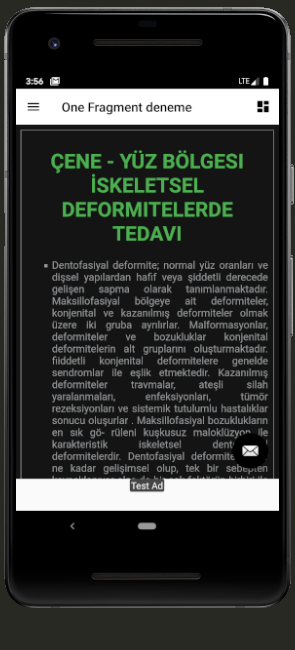

Ağız, Diş ve Çene Cerrahisi bilimi, diş hekimliğinin baş-boyun sistemi içinde, özellikle ağız, diş, çene ve yüz yapıları üzerinde travmatik, patolojik, doğumsal ya da enfeksiyona bağlı hastalık ve anomalilerin ortaya çıkmadan önlenmesi, tanısı tedavisi ve rehabilitasyonunu sağlayan temel alanlarından biridir. Bu yapılar, gerek insan vücudunun solunum ve sindirim sisteminin başlangıç alanı olmaları, gerekse de flora içeriği nedeniyle diğer birçok yapıyı doğrudan ya da dolaylı olarak etkileyebilir. Bununla birlikte, çok sayıda hastalığın birincil olarak ortaya çıktığı ve etkilerini gösterdiği bir alan olması nedeniyle birey, toplum sağlığı açısından hem fonksiyonel hem estetik ve psikolojik olarak son derece önemlidirler. Tanımlanmış olan bu müfredat, sadece uzmanlık öğrencilerini, eğiticileri, uzmanlık eğitimi veren kurum ve programları ilgilendirmekle kalmayıp aynı zamanda ilgili fakülteler, yerel otorite ve verilen eğitimden etkilenebilecek ve etkileyebilecek tüm paydaşları da ilgilendirmektedir.
Dünyadaki örneklerinde de görüldüğü üzere, uzmanlık eğitim müfredatı oral ve maksillofasiyal cerrahi uzmanlık disiplininin tedavi protokolleri kapsamında girişimsel cerrahi teknikleri uygulayarak, lokal ve genel ameliyathaneleri ile hastaların ayaktan veya yatarak gözlem, muayene, teşhis, tedavi, ve rehabilite edebilmelerini sağlayacak yetkinlikte uzmanların yetişmesini sağlamayı amaçlamaktadır.
Hazırlanan uzmanlık eğitim müfredatı, uluslararası standartlara uygun olarak, Türkiye’de alanımızda ülke gereksinimlerini karşılayacak yetkin uzmanlar yetiştirmek, ayrıca uzmanlık eğitiminin ve eğitim veren kurumların standartlarını oluşturmayı hedeflemektedir.
Bu uzmanlık alanı, Ülkemizde ilk kez 1933 yılında İstanbul Üniversitesi Diş Hekimliği Fakültesinde “Çene Yüz Cerrahisi Kürsüsü” adı altında resmiyet kazanmıştır.
Müfredat çalışmaları ise, tıpta ve diş hekimliğinde uzmanlık eğitimi konularında en üst düzeyde çalışmalar yapmak ve görüş oluşturmak için kanun ile kurulmuş olan Tıpta Uzmanlık Kurulu (TUK) ile 2008 yılında başlamıştır. Uzmanlık dallarının eğitim müfredatları ve bu müfredatlara göre uzmanlık dallarının temel uygulama temel uygulama alanları ile görev ve yetkilerinin çerçevesini belirlemek üzere “Tıpta Uzmanlık Kurulu Müfredat Oluşturma ve Standart Belirleme Sistemi” (TUKMOS) oluşturulmuştur.
Müfredatı oluşturmak ve standart belirlemek amacıyla her bir uzmanlık dalı için bir komisyon kurulmuştur. Temmuz 2008’den beri devam eden uzmanlık çalışmaları sonucunda Tıpta ve Diş hekimliğinde Uzmanlık yasası 26 Nisan 2011 tarihli resmi gazetede yayınlanmış ve diş hekimliğinde uzmanlık 8 dalda hayata geçmiştir.
Daha FAZLA BİLGİ İÇİN "Doktorlar İçin" adındaki Android Uygulamanızı Google Play Mağaza'sından ücretsiz olarak indirebilirsiniz.
| 1 | 2 |
|---|---|
| GÖMÜLÜ DİŞLERİN ÇEKİM SÜRECİNİN YÖNETİMİ | GÖMÜLÜ 20 YAŞ DİŞLERİ GÖMÜLÜ KANİN DİŞLER GÖMÜLÜ SÜRNÜMERER DİŞLER GÖMÜLÜ DİĞER DİŞLER |
| AĞIZ, DİŞ, ÇENE VE İLİŞKİLİ DOKULARIN ENFEKSİYONLARI | ODONTOJEN KAYNAKLI ENFEKSİYONLAR NON-ODONTOJEN ENFEKSİYONLAR SPESİFİK ENFEKSİYONLAR |
| AĞIZ, DİŞ, ÇENE VE İLİŞKİLİ DOKULARIN KİSTLERİ | ODONTOJEN KİSTLER NON-ODONTOJEN KİSTLER |
| AĞIZ, DİŞ, ÇENE VE İLİŞKİLİ DOKULARIN TÜMÖR VE TÜMÖR BENZERİ LEZYONLARI | ODONTOJEN KAYNAKLI İYİ HUYLU TÜMÖRLER ODONTOJEN KAYNAKLI KÖTÜ HUYLU TÜMÖRLER NON-ODONTOJEN İYİ HUYLU TÜMÖRLER NON-ODONTOJEN KÖTÜ HUYLU TÜMÖRLER TÜMÖR BENZERİ LEZYONLAR |
Söylediklerim hoşuna gitti değil mi ? O zaman beni Twitter'dan . ve Youtube'den takip et lütfen.